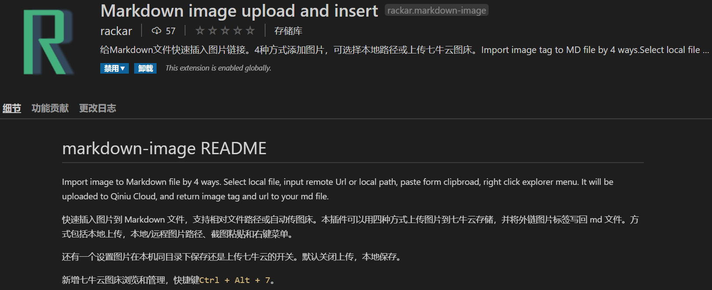
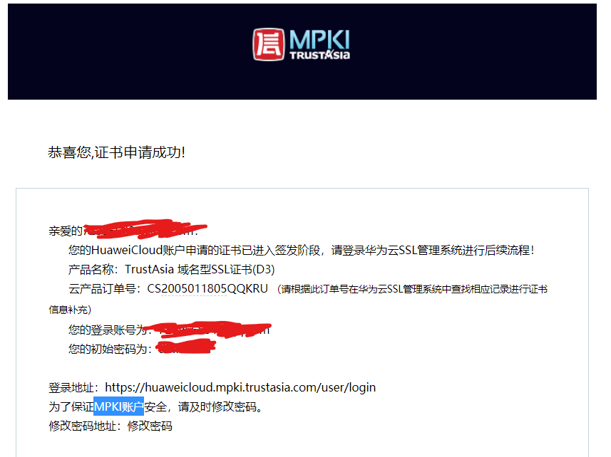
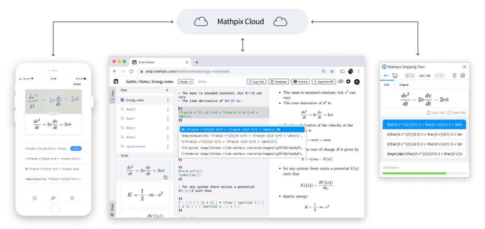

小技巧¶
将网页添加到桌面快捷方式¶
- 桌面上
右键->新建快捷方式。 - 键入网页地址与名称，完成
mkdocs中的表格、¶
- 表格必须严格按照要求，不能多
| - 无序列表的缩进在mkdocs中必须有两个tab才能被识别
V2Ray的用户PAC自定义规则¶
- 在V2Ray的
参数设置->用户PAC设置中的输入框中键入需要代理的网站（如Github.com）， - 确认后代理重新加载，可以连接了
- 多个网站用逗号隔开即可
git如果包含子git项目，子项目将不会被提交¶
- 做法：删除子项目（但不是直接删除.git文件）：
如这样删除Latex2MathML目录下的子git 项目
1 | git rm -rf --cached other/Latex2MathML |
在Markdown中直接粘贴图片（VScode环境）¶
VS Code 插件中搜索 markdown-image 就可以找到。点击 Install 安装。或者使用快捷键Ctrl+P，键入 ext install markdown-image

1 | Ctrl+Alt+8 //实现从剪切板粘贴 |
华为云免费SSL¶
华为云市场搜索证书。可以找到免费的SSL证书购买。
以TrustAsia信亚免费证书为例（以商品详情为参考）：
- 购买后会发送邮件到华为云注册的邮箱
- 
- 邮件中包含一个HUAWEI CLOUD SSL账号（MPKI账号）登陆后按照指引有两种验证域名所有权的方式
- DNS验证
- 文件验证
Ubuntu Apache2 重定向到https¶
打开网站配置文件，比如 /etc/apache2/sites-available/000-default.conf ， 在 <\VirtualHost *:80><\VirtualHost> 标签内随便一个地方加入以下三行
1 2 3 | RewriteEngine on
RewriteCond %{HTTPS} !=on
Rew-riteRule ^(.*) https://%{SERVER_NAME}$1 [L,R=301]
|
Ubuntu Apache2 SSL配置¶
Ubuntu系统Apache 2部署SSL证书 更新时间：2020-01-14 18:02:09
本文档为您介绍了如何在Ubuntu系统以及Apache2中安装阿里云SSL证书。
环境准备¶
操作系统：Ubuntu
Web服务器：Apache 2
前提条件¶
已从SSL证书控制台下载Apache服务器证书。 已安装Open SSL。
操作步骤¶
运行以下命令在apache2目录下创建ssl目录。
1 | mkdir /etc/apache2/ssl |
运行以下命令将下载的阿里云证书文件复制到ssl目录中。
1 2 3 | cp -r YourDomainName_public.crt /etc/apache2/ssl cp -r YourDomainName_chain.crt /etc/apache2/ssl cp -r YourDomainName.key /etc/apache2/ssl |
运行以下命令启用SSL模块。
1 | sudo a2enmod ssl |
启用SSL模块 SSL模块启用后可执行ls /etc/apache2/sites-available查看目录下生成的default-ssl.conf文件。
Note
说明 443端口是网络浏览端口，主要用于HTTPS服务。SSL模块启用后会自动放行443端口。若443端口未自动放行，可执行vi /etc/apache2/ports.conf并添加Listen 443手动放行。
运行以下命令修改SSL配置文件default-ssl.conf。
1 | vi /etc/apache2/sites-available/default-ssl.conf |
在default-ssl.conf文件中找到以下参数进行修改后保存并退出。
1 2 3 4 5 6 | <IfModules mod_ssl.c> <VirtualHost *:443> ServerName #修改为证书绑定的域名www.YourDomainName.com。 SSLCertificateFile /etc/apache2/ssl/www.YourDomainName_public.crt #将/etc/apache2/ssl/www.YourDomainName.com_public.crt替换为证书文件路径+证书文件名。 SSLCertificateKeyFile /etc/ssl/apache2/www.YourDomainName.com.key #将/etc/apache2/ssl/www.YourDomainName.com.key替换为证书密钥文件路径+证书密钥文件名。 SSLCertificateChainFile /etc/apache2/ssl/www.YourDomainName.com_chain.crt #将/etc/apache2/ssl/www.YourDomainName.com_chain.crt替换为证书链文件路径+证书链文件名。 |
修改SSL配置文件 * /sites-available：该目录存放的是可用的虚拟主机；/sites-enabled：该目录存放的是已经启用的虚拟主机。
-
说明 default-ssl.conf文件可能存放在/etc/apache2/sites-available或/etc/apache2/sites-enabled目录中。
-
运行以下命令把default-ssl.conf映射至/etc/apache2/sites-enabled文件夹中建立软链接、实现二者之间的自动关联。
1 | sudo ln -s /etc/apache2/sites-available/default-ssl.conf /etc/apache2/sites-enabled/001-ssl.conf |
重新加载Apache 2配置文件。运行以下命令重启Apache 2服务。
1 2 | sudo service apache2 reload sudo service apache2 restart |
重启Apache 2服务，完成
REFERENCE 参考¶
阿里官网教程https://help.aliyun.com/document_detail/102450.html
手写公式转Tex/MathML/Unicode Liner——MathPix Snip¶
Mathpix——电脑端每个月免费用50次，手机端无限制使用
- 这个软件对手写或者打印的公式,甚至是表格、文字都有效果，可以试一试，转成Tex之后，可以用以下工具，将公式键入Word:
- 【在Word中快速打出公式】LATEX2MathML工具——将TEX公式转换为Word兼容的格式
- 使用文档：https://mathpix.com/docs/snip/try-examples-equations
- 视频教程：https://www.bilibili.com/video/BV1AJ411X7Ek

正则表达式：匹配任意字符串¶
- 正则表达式(Regular Expression)匹配任意字符串
1 | (.*?) |
VMware安装MacOS¶
https://blog.csdn.net/hiudawn/article/details/80423420
这里使用的是1.VM12+2.破解工具+3.OS X 10.11.这样的组合才能较简单的安装成功
解决安装黑苹果出现“没有符合安装资格的软件包”:
解决方法:
1.打开实用工具——终端
2.如果你的Mac是联网状体，可以输入一下代码：
ntpdate time.apple.com
不过安装的时候一般是没法联网的
3.我们只能输入：date 070512052018.03 （这里设置一个2015年以后的时间，因为10.11发布时2015年）
mkdocs使用extention： - pymdownx.arithmatex的时候要安装py的一个包¶
pip install pymdown-extensions
不然会报错
material编译的时候，是版本更新的问题。（python错误）¶
原因是，materials新的更新和我原来的主题不适配，所以build的时候出错了。还好保存了当时的mkdoc-materials的git包，从那里安装了一遍这个主题，不然几乎无法恢复了